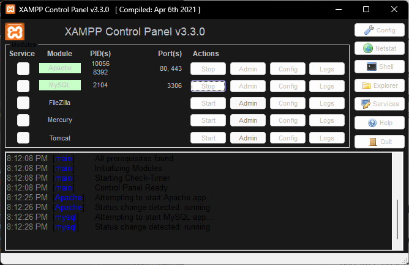
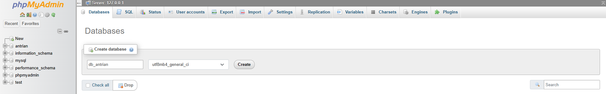

Pendahuluan
Threat modeling adalah metode terstruktur untuk mengenali, menilai, dan memitigasi potensi ancaman keamanan pada sebuah sistem. Tujuannya adalah menemukan titik-titik rentan sejak awal—seperti autentikasi tidak aman, kebocoran data, atau kemungkinan eskalasi hak akses—lalu menyusun langkah pencegahan baik secara teknis maupun prosedural. Pada artikel ini, proses threat modeling diterapkan pada aplikasi antrian berbasis PHP + MySQL dari repository galihap76/antrian sebagai contoh studi kasus.
Persiapan
1. Instalasi Server
- Unduh XAMPP melalui situs resmi: https://www.apachefriends.org/
- Jalankan layanan Apache dan MySQL dari XAMPP Control Panel.
- Cek apakah server aktif dengan membuka: http://localhost. Jika dashboard XAMPP muncul, berarti server sudah berjalan.

2. Instalasi Aplikasi Antrian
- Buka terminal dan masuk ke direktori web server (XAMPP/htdocs).
- Clone repository aplikasi:
3. Import Database
- Masuk ke phpMyAdmin dan buat database baru bernama antrian.

- Import file SQL yang berada di: antrian/assets/db_antrian.sql.
- Jika proses impor berhasil, database siap digunakan.
4. Menjalankan Aplikasi
Akses aplikasi melalui browser: http://localhost/antrian